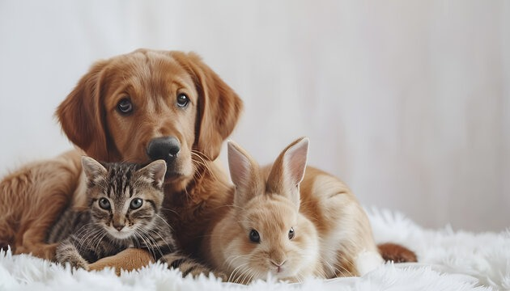
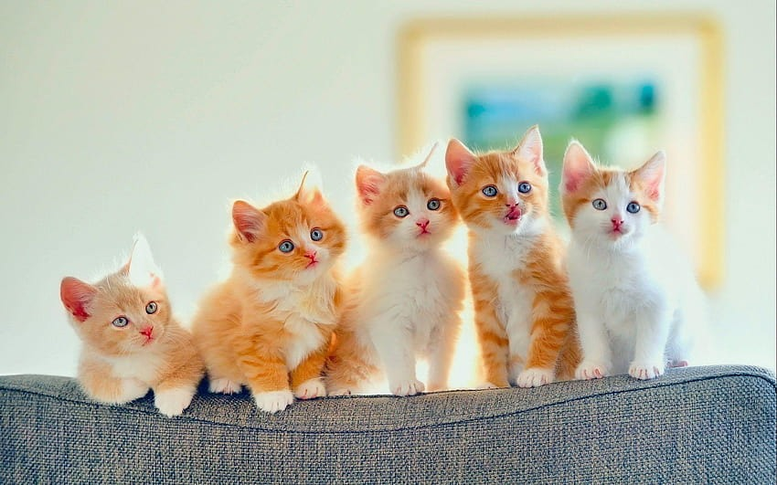
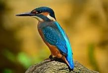
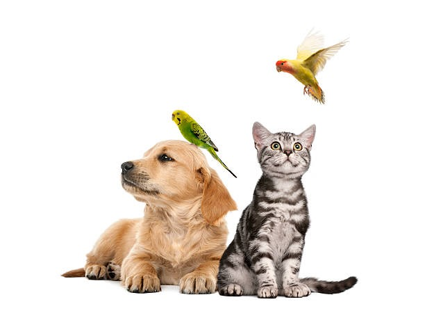

Our Lovely Pets






Join our mission to connect pets with loving homes
Explore Pets for AdoptionDiscover a variety of pets available for adoption, complete with detailed profiles.
Submit your adoption application and communicate with shelters through the platform.
Find pets near you with our convenient location-based search feature.



